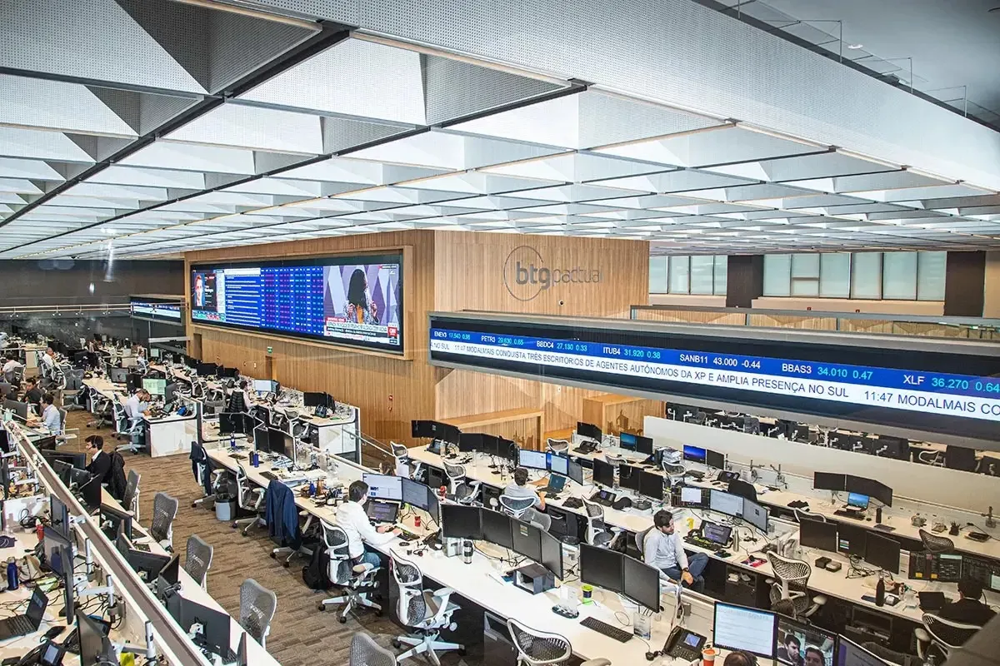

Corretora de Investimentos
Você está pronto para trilhar uma jornada de crescimento financeiro e liberdade? Bem-vindo à Invest'Braz,
a sua parceira confiável e experiente em investimentos que está pronta para transformar seus sonhos em realidade.

Tipo de investimento no qual um investidor empresta dinheiro a uma entidade,
seja um governo, uma empresa ou uma instituição financeira,
em troca de um retorno financeiro previsível ao longo do tempo.
Letra de Crédito Imobiliário. Trata-se de um tipo de investimento em renda fixa muito comum no Brasil.
As LCIs são títulos emitidos por instituições financeiras com o objetivo de captar recursos para financiar
o setor imobiliário.
Letra de Crédito do Agronegócio. Assim como a LCI (Letra de Crédito Imobiliário),
a LCA é um título de renda fixa emitido por instituições financeiras com o objetivo
de captar recursos para financiar um setor específico, no caso, o agronegócio.
Tipo de investimento em que os retornos não são previsíveis e podem flutuar com base nas condições do mercado.
Diferentemente da renda fixa, onde os pagamentos são definidos previamente, na renda variável os ganhos e perdas
estão diretamente ligados ao desempenho das ações, títulos e outros ativos financeiros nos mercados.
programa do governo brasileiro que permite que pessoas físicas comprem títulos públicos diretamente do Tesouro Nacional por meio de uma plataforma online.
É uma forma de investimento de renda fixa que oferece opções acessíveis e seguras para investidores interessados em aplicar seu dinheiro em papéis emitidos pelo governo federal.
veículos de investimento coletivo nos quais diversos investidores reúnem seu dinheiro para ser administrado por um gestor profissional.
Esses gestores, por sua vez, aplicam os recursos do fundo em uma variedade de ativos financeiros, como ações, títulos de renda fixa, moedas, commodities e outros instrumentos, de acordo com os objetivos e estratégias definidos para o fundo.